Pedro Henrique
Estudante • Desenvolvedor
Desenvolvimento dos meus projetos
Sejam bem-vindo ao meu portfólio! Aqui você vai conhecer um pouco sobre mim e conferir alguns dos trabalhos que desenvolvi durante os 6 meses de curso, tanto individualmente quanto em equipe. Cada projeto me ajudou muito a aprender novas tecnologias, melhorar minhas habilidades e ganhar mais experiência na área de desenvolvimento.
Projeto 01
Reino Geek 013
Neste trabalho desenvolvi um protótpo de site, utilizando o Canva, para um evento geek fictício chamado Cosplay-Con Brasil 2026. O objetivo foi criar páginas organizadas e visualmente atrativa, reunindo informações como data, local, inscrições, convidados, estandes e a planta do evento. Também procuramos manter uma identidade visual voltada para o público geek, utilizando cores, imagens e uma navegação simples para proporcionar uma experiência semelhante à de um site real de convenções.
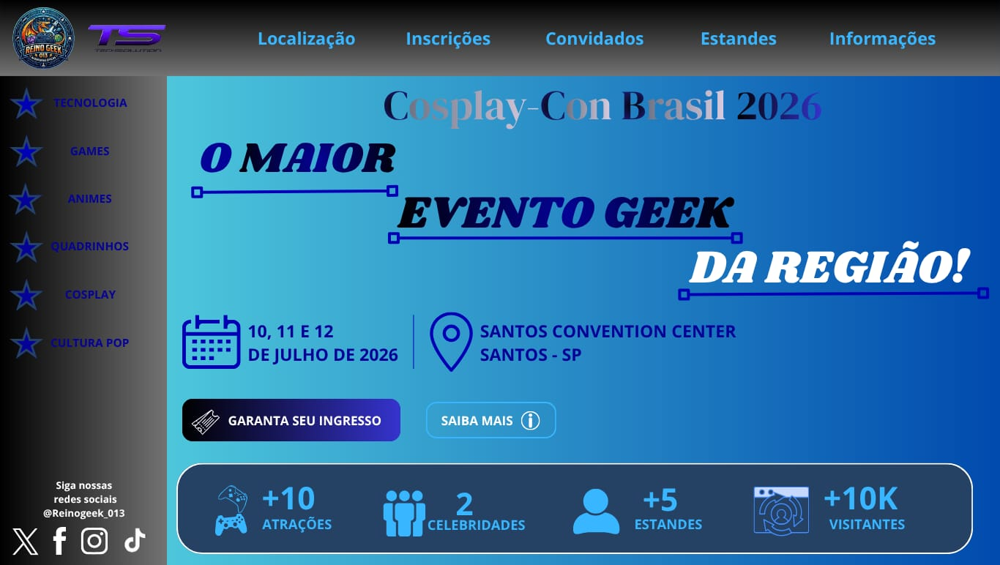
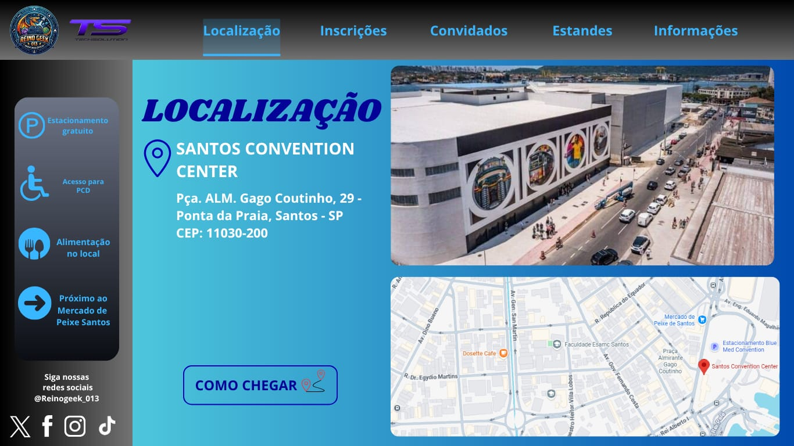
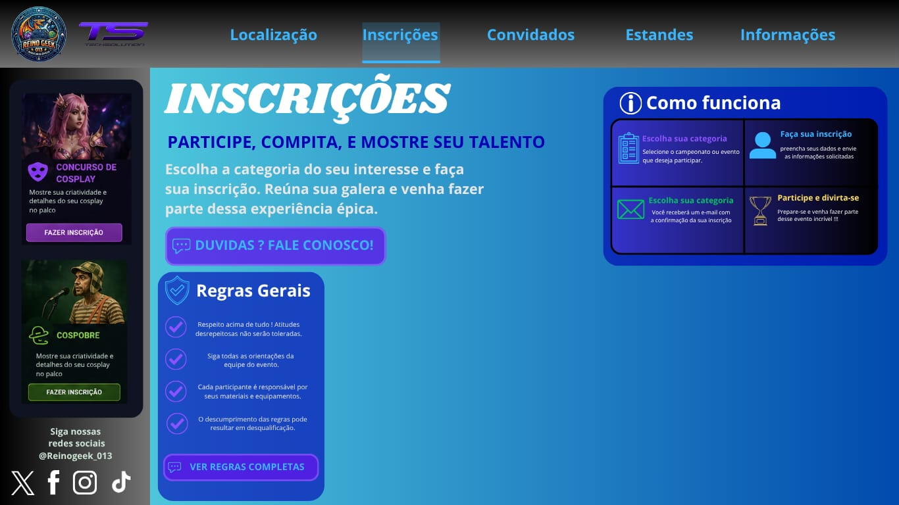
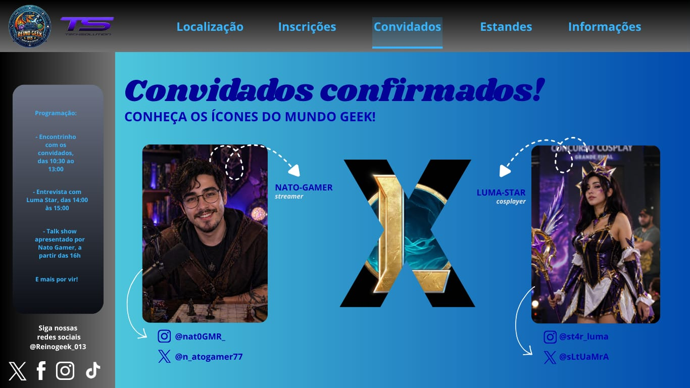
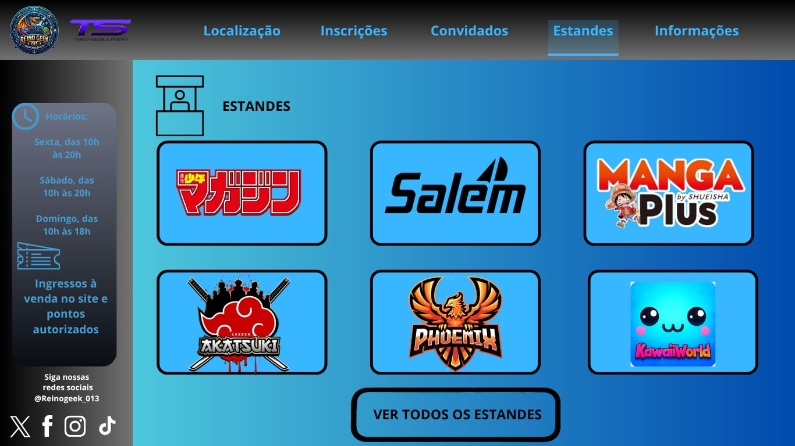
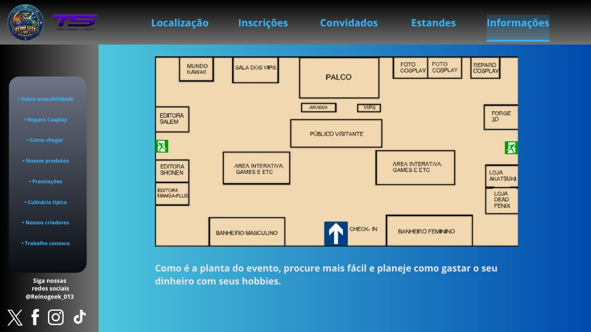
Projeto 02
Site Diversidade
Neste trabalho de PTIC, desenvolvi um site com foco na valorização da diversidade dos gêneros, como o Agênero, e inclusão durante o mês do orgulho LGBTQIAPN+. O objetivo foi criar uma página informativa, interativa e visualmente agradável, reunindo conteúdos sobre respeito, representatividade, conscientização e a importância da diversidade na sociedade. Também procurei manter uma identidade visual moderna e organizada, utilizando cores, imagens e uma navegação simples para tornar a experiência do usuário mais intuitiva e acolhedora, além de ser meio que um prtal/rede social né, engajando mais as pessoas a entrarem.
Clique aqui para acessar o site
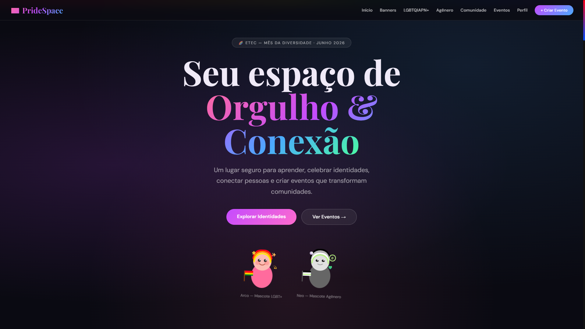
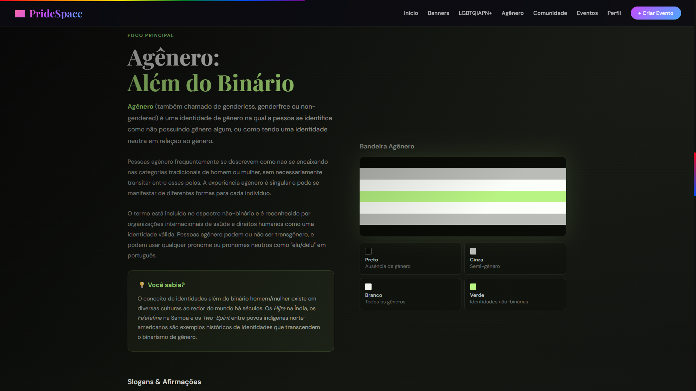
Projeto 03
Doe+ 013
Já esse trabalho criamos um site voltado para a conscientização sobre a importância da doação de sangue. O objetivo foi criar uma página informativa e de fácil navegação, reunindo conteúdos sobre quem pode doar sangue, os benefícios da doação, os cuidados necessários e formas de incentivar mais pessoas a se tornarem doadoras. Também procuramos utilizar uma identidade visual que remetesse ao tema, deixando o site organizado, intuitivo e acessível para facilitar o acesso às informações.
Clique aqui para acessar o site

Projeto 04
Present Continuous
E esse trabalho aqui desenvolvi uma apresentação em inglês sobre o Present Continuous, utilizando como referência a música Levitating, da Dua Lipa. Com objetivo foi explicar de forma simples como esse tempo verbal é formado e utilizado, apresentando exemplos práticos, regras para a formação dos verbos com -ing e um resumo final para facilitar a compreensão do conteúdo. Também procurei organizar os slides de maneira clara e visualmente agradável, tornando o aprendizado mais dinâmico.
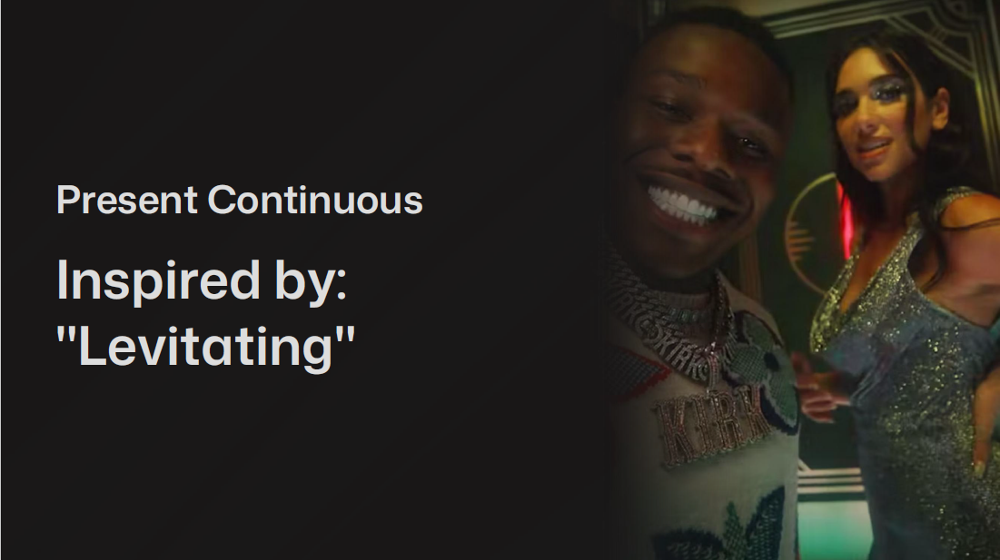
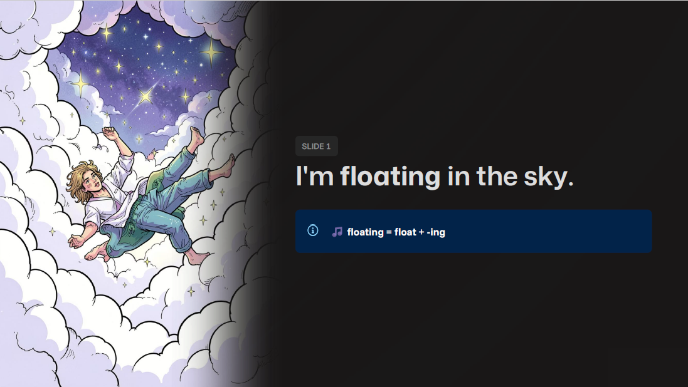
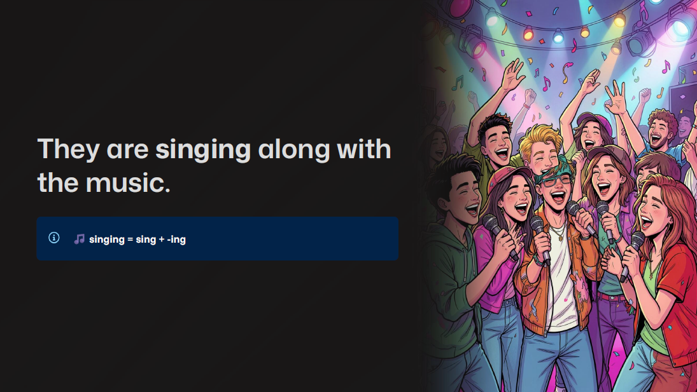
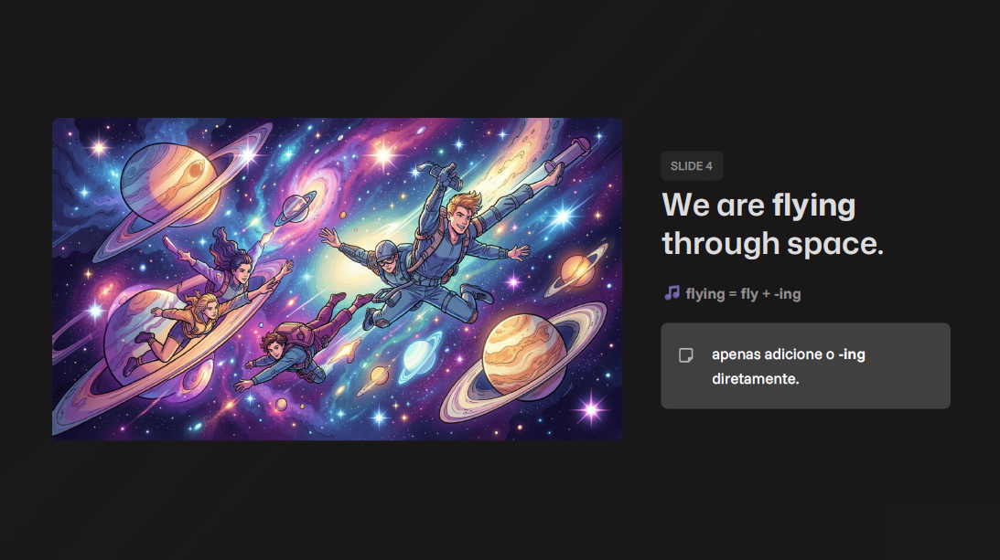